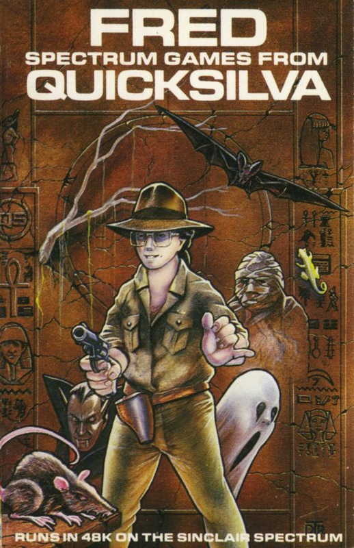

LOAD " "
LOAD " "

FREDThese are the authors who brought you the colourful Bugaboo (The Flea). Fred is an intrepid explorer who goes about collecting valuable treasure from tombs, in this case the Pyramid of Tootiecarmoon. The insides of the Pyramid take the form of a very large maze, several of them in fact. This isn't a maze in plan, but a vertical cross section, so Fred is forever going up, down or left and right. He goes vertically by way of the numerous ropes hanging from the ceiling far above. The playing area only shows a small fraction of the whole maze and scrolls along with Fred in the centre.
Naturally this venture is fraught with problems in the shape of rats, which must be jumped at the right moment, acid drops (from the decomposing mixtures of the Egyptian magicians), ghosts which go through wall but change direction when shot, mummies that fall down the vertical shafts and can teleport when they land or get hit by a bullet, vampires which can be shot (silver bullets no doubt) and of course the ubiquitous skeletons which chase relentlessly and can only be stopped with a shot.
All these horrors not surprisingly drained Fred of power. Only by drinking the magic elixir of Nefertiti or reaching an exit can Fred's power be regained. Fred is armed with a gun and six shots, and may be aided by finding a map to the tomb. Bonus points are awarded for picking up the various treasures.
There are six screens of Increasing difficulty, but there is also an option to redefine the maze and numbers of monsters.
'The game has great animation, especially that of Fred himself, and the graphics are generally excellent. Even Fred's revolver recoils when it is fired! There Isn't a lot of colour, but what there is makes a good balance and creates atmosphere. It isn't an easy game to play either, which makes it addictive and great fun. I hope Indescomp bring Out much more software. I think I spotted two bugs; on several games I didn't start with any bullets, and in one game the scoring went mad, so that I scored every time I moved. I eventually ended up with, wait for it — 818,300 points! I like this game!'
• 'Because of the general design of the maze and because you can only see a small part of it at any time, this is quite a difficult game to play. I like the graphics, Fred is excellent, and it all seems like fun, but in the end found it a bit boring. Later screens certainly get very busy, but at the end of the day the thrill factor wasn't very high and I think Bugaboo was better.'
• 'I should think there's a danger that with a name like 'Fred' lots of people won't think it worth buying. Which would be a shame, because it's a very good maze game, original and fun to play. I didn't think it all that addictive, however, but still well worth a go.'
Control keys:
Q/W = left/right, E/R = down/up, T to fire, or user-definable
Joystick:
Kempston, but most others via user definable
Keyboard play:
fairly responsive, positioning of Fred must be accurate
Colour:
good, muted colours
Graphics:
very good
Sound:
average
Skill levels:
progressive difficulty
Lives:
percentage of damage
Screens:
continuously scrolling through six tombs
General rating:
very good, mixed feeling on addictivity.
| Use of computer | 85% |
| Graphics | 90% |
| Playability | 87% |
| Getting started | 88% |
| Addictive qualities | 70% |
| Value for money | 80% |
| Overall | 83% |

{kind=link}